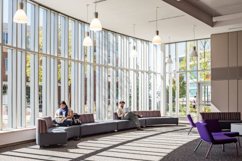
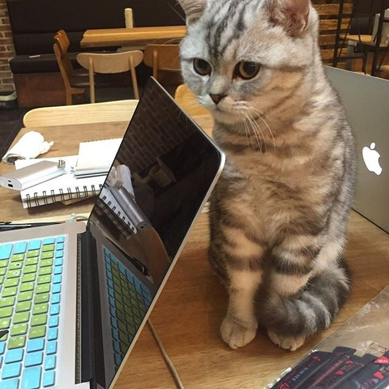

Education
Bachelor Degree | Operation Information Management
Minor | Information Technology
May 2018 | University of Massachusetts Amherst
- Operation Information Management provided in-depth look at Six Sigma, SAP and Lean strategy.
- Information Technology provided exposure and experience with software to find results and to visualize data displays in an easy-to-read format using Spotfire Tableau, Python, Java and SQL.

Career Journey
DATA ENGINEER | Mayhew Steel Products, Incorporated
Turners Falls, MA | June 2018 - February 2019
SQL, SQL Server Reporting Services (SSRS), Macola (ERP & MRP), Excel, Visual Basic for Applications (VBA), Crystal, ShopVue
- Communicating with management to convert documents (physical copies and Windows 7 servers) to SSRS reports, improving formulas and provide back up to cloud database.
- Solving inconstancies in multiple departments by using Vertical Lookup (VLOOKUP), manual verification, and SQL.
- Reducing product release time by using SQL clusters and VBA to mange packaging components.
ASSISTANT MANAGER | ANNIE’S BOOK STOP
Worcester, MA | May 2015 - December 2016
Excel, Troubleshooting, Training- Created an organized database of collectable books by using Excel while managing frontline customer interaction.
- Troubleshooting internet, Point of Sale (POS) terminal and land lines along with setting up IT hardware for viewing events.
- Increased summer sales to record breaking profits by implementing and training coworkers in lean strategy.
- Independently led team when manager was away; trained new hires in database management (1000+ books).
English Teacher| Avalon: Langcon of the Republic of Korea
Ilsandong-gu, Republic of Korea | March 2019 - March 2020

- Spearheaded new initiative with team to increase company revenue by 5% through optional hobby-inspired English classes (STEM, cooking, art, and gym) for existing students to invite their friends.
- Using PowerPoint and Word to design team-building games and interactive lesson plan materials to make an immersive learning experience within tight schedules and daily deadlines.
- Keeping composer and comforted students as COVID-19 swept the country.
Volunteer
Cultural Exchange Program (Clucom)
Ilsandong-gu, Republic of Korea | March 2019 - March 2020
Taking action at a language exchange, as an American expatriate working on a cross-cultural team with South Koreans, I facilitated diverse and inclusive decision groups and recommended modern learning materials for adults learning English.

Chi: Culcom's Mascot
providing motivation to students
International Programs Office (IPO) Buddy
University of Massachusetts Amherst | January 2016 - May 2017
Providing company and peer guidance for first year international students. During outings, managing cultural conflicts that transpire with locals to keep a positive atmosphere.
Phi Theta Kappa (PTK): Honor Society
Worcester, MA | January 2013 - December 2015
Reaching out to new students familiarizing them with educational and financial resources on campus. Our mission to assist and support students in their goal of earning a degree in areas where students face adversity.